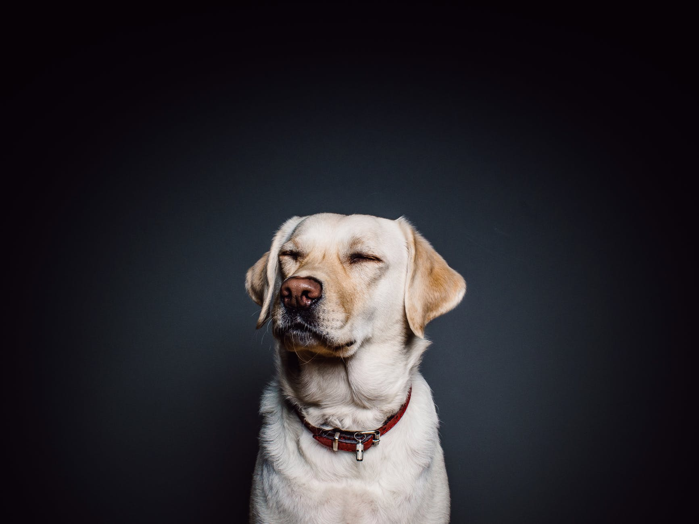

Hund er et husdyr som tilhører artsfamilien,
«hundefamilien». Hunden regnes som en temmet ulv.
Som et resultat av menneskestyrt avl, finner en i
dag hunder i mange ulike farger og fasonger ment til
å løse ulike oppgaver. Det finnes omtrent 900 ulike
hundetyper.
Ronny
2/10
Til hund å være, må Ronny ha et enormt synsfelt.
Til tross for denne gudegaven, ser Ronny ut til å
være lite interessert i verden rundt seg. Ronny
er kronisk bekymret, slukøret og lettere depresiv.
Er du ute etter en fotskammel, er dette hunden å ha.
Bollivar

7/10
Bollivar ser ut til å være en særdeles snill hund.
Dette er et
prakteksemplar av menneskets beste venn. Med sitt
brede glis er Bolivar i stand til å sjarmere en hver
med cynofobi i senk. Trolig er Bollivar noe svaksyn.
Bollivar skal likevel få et pluss
for å skjule sine svakheter så godt han kan.